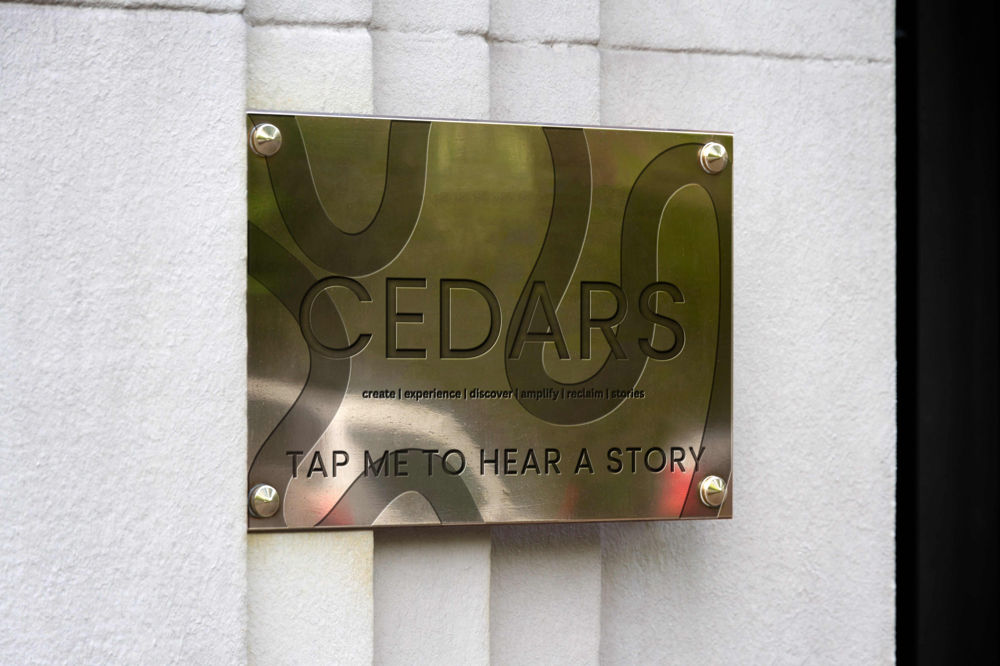
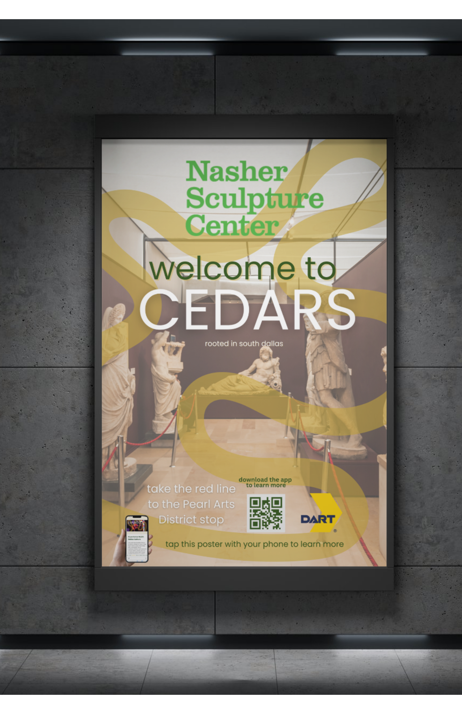

Experience South Dallas history through our interactive NFC-enabled plaques located throughout DART stations. Simply tap your phone on the CEDARS plaques to instantly access audio stories, historical photos, and community memories from the people who shaped this neighborhood.

Our CEDARS plaques use Near Field Communication (NFC) technology - the same technology used for contactless payments. When you tap your smartphone on a CEDARS plaque, it instantly connects you to the stories of that location.
No app download required! Your phone automatically recognizes the NFC tag and opens the story in your browser.
Look for CEDARS plaques at DART stations throughout South Dallas.
Hold your smartphone near the plaque's NFC area.
The story opens automatically - no app needed!
Share the story with friends and family to spread South Dallas heritage.
Click on the markers below to preview stories from historic South Dallas locations. Visit these spots in person to experience the full audio story via NFC!
Click on a marker on the map to hear a preview of the story from that location.

Our wayfinding signs guide you through South Dallas's cultural landmarks. Located at key DART stations, these signs help you discover venues, historic sites, and community spaces.
Scan to download the CEDARS app and access full stories
Tap your phone for instant access to directions and stories
Clear signage showing distances to nearby venues and sites
Connected to DART routes for seamless navigation
The interactive wayfinding system makes it easy for residents and visitors to discover South Dallas's rich cultural heritage while navigating between DART stations and local destinations.